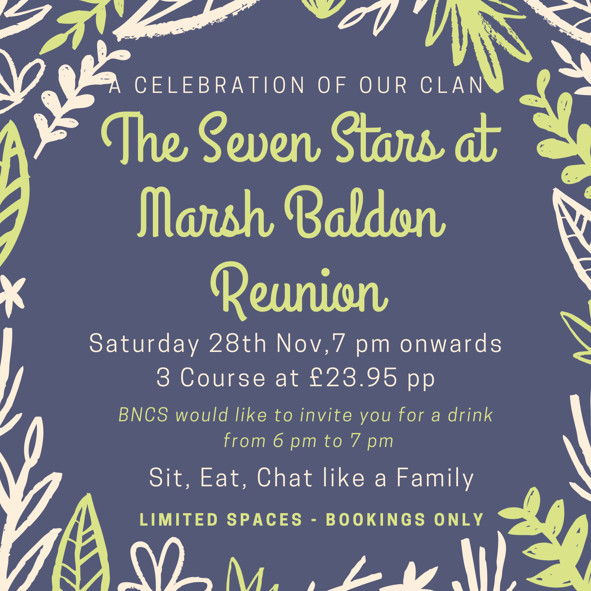

Saturday 28 November · drinks with BNCS from 6pm · dinner from 7pm
The Seven Stars will be hosting another village reunion dinner on Saturday 28 November at 7pm. January's was a great success, filling the dining barn.
Once again BNCS would like to invite people to join us for a drink 'on the house' and a chat from 6pm to 7pm. This is for all members of the community, whether shareholders or not, and in particular for anyone who might be interested in learning more about the Society or investing in shares.
It's also a chance to share any informal feedback with Namit and Sunit and hear a bit about their plans for the year.
It would be good to see Society members there, but please also share the invite with any newer neighbours who may not be fully aware of BNCS or who would like to learn more. Whether or not you're staying on for dinner, we'd love to see you there from 6pm to 7pm.
The dinner is three courses at £23.95 per person. Spaces are limited and it is bookings only, so please book with the Seven Stars on 01865 343337.
BNCS Committee
